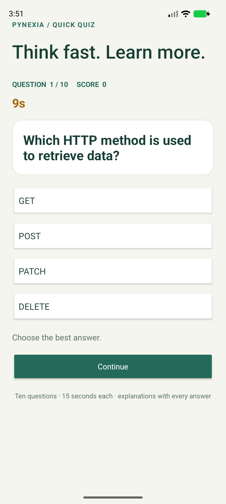

Native Android · Java + XML
Quiz App
Think fast. Learn more.
A timed multiple-choice quiz about REST APIs, JSON, Android networking and image loading, with scoring and answer explanations.
Project showcase · Android 8.0+ · Evaluation build.

01 / Implementation
Built around the assignment
Week 3: REST APIs, JSON parsing, asynchronous networking and native Android screens.
Read the bilingual report (PDF)Interactive quiz
Ten four-option questions are presented one at a time with an answer selection and continue flow.
Timer and score
Each question has a 15-second countdown. The score updates after correct answers; a timed-out answer does not earn a point.
Feedback and restart
Each answer explains the concept. The end screen reports the score and offers another round.
02 / In the app
Actual Android screen

03 / Try it
Review walkthrough
- Read the question and choose one of four answers.
- Answer before the 15-second timer ends.
- Review the explanation and continue through all ten questions.
- See the final score and choose Play again.
Build status
Debug build completed
Automated tests were not run. See build and lint records in the repository.
شرح التمرين
يقدم الاختبار عشرة أسئلة اختيار من متعدد حول REST وJSON وطلبات الشبكة في Android. لكل سؤال مؤقت مدته 15 ثانية. يحسب التطبيق الإجابات الصحيحة، ويعرض توضيحًا بعد كل اختيار والنتيجة النهائية مع إمكانية إعادة اللعب.
04 / Submission kit
Files for your project form
Repository URL: https://github.com/ENGEyad/pynexia-week3-quiz
Hosted URL: https://engeyad.github.io/pynexia-week3-quiz/
Attach File / Archive: Quiz-App.zip (758 characters of notes included below in the report)
Implementation notes
Native Android Quiz App built with Java and XML. Includes ten multiple-choice questions about HTTP, REST APIs, JSON, asynchronous networking and image loading. Each question has four choices and a 15-second countdown. The score counts correct selections. Every answer displays a short explanation; the final screen provides a score and restart option. Run the quiz module in Android Studio with JDK 17/21 and Android SDK 35 on Android 8.0/API 26 or later. No internet connection is required. Build: assembleDebug passed. Automated tests were not run. Lint findings are included in the repository and report. The quiz and answer key are local. Scores are limited to the current round. Hosted page includes the APK, source archive, report and screenshots.